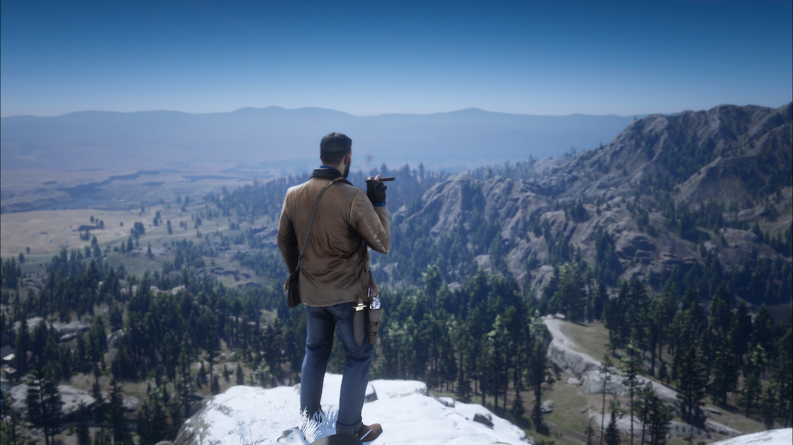

Bem-vindo ao nosso universo de curiosidades sobre Red Dead Redemption 2! Aqui, exploramos os recantos fascinantes e as histórias envolventes do Velho Oeste digital. Prepare-se para desvendar segredos, descobrir detalhes ocultos e mergulhar nas curiosidades que tornam Red Dead Redemption 2 uma experiência única. Seja você um caçador de easter eggs ou um aventureiro curioso, este é o lugar onde a história ganha vida, e cada trilha poeirenta esconde algo especial. Vamos juntos explorar os mistérios e maravilhas desse épico dos videogames. Sinta-se em casa!